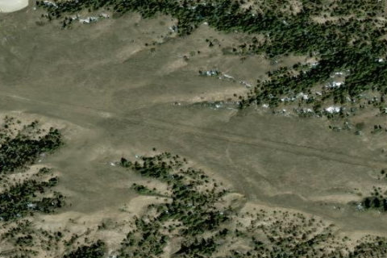

Black Butte South, MT

Aerial imagery source: Esri, Vantor, Earthstar Geographics, and the GIS User Community
View original source (Shortfield) →
| CTAF | 122.9 |
|---|---|
| Coordinates | 47.841483, -109.20375 |
Notes
[shortfield] Location Overview Black Butte South sits in the Missouri Breaks country of north-central Montana, within or adjacent to the Upper Missouri River Breaks National Monument — a vast, rugged landscape of badlands, coulees, and prairie carved by the Missouri River. The strip lies roughly a mile southwest of the charted Black Butte North airstrip (BB0), in a setting of sagebrush flats and breaks terrain typical of the monument, with no nearby towns or services. Access by road is limited to primitive BLM tracks that can become impassable when wet. Camping & Recreation Like other strips in the Breaks, Black Butte South likely offered only dry, primitive camping directly off the runway — no facilities, water, or services. The surrounding monument is prized for solitude, hiking, and dispersed recreation, along with hunting for mule deer, elk, and bighorn sheep in the area. Given the strip's believed closed status, anyone seeking these recreational opportunities nearby should instead use Black Butte North or one of the other charted strips. Notes & Warnings This strip is believed to be closed and should not be relied upon as an active or maintained landing site. If closure is confirmed, attempting to land here would mean using an unauthorized, unmaintained surface with no guarantee of safe condition, length, or obstruction clearance. It is not among the handful of strips formally charted and maintained through RAF/BLM cooperation in the Breaks (Woodhawk, Knox Ridge, Left Coulee, Black Butte North, Cow Creek, and Bullwhacker), which further supports its closed/unmaintained status. History The Missouri Breaks have hosted a network of 10–20 small airstrips since the 1950s, originally built and maintained by the BLM to support ranching and access to remote public land. When the area was designated a national monument in 2001, many of these strips faced potential closure; pilot advocacy groups — including the Recreational Aviation Foundation and Montana Pilots Association — worked with the BLM to preserve a core group of six charted strips. Black Butte South was apparently not among the strips selected for preservation, and is now believed closed — likely one of the several airstrips from that same era that lost formal status and access during the monument's management planning process, distinguishing it from its still-active neighbor to the north.